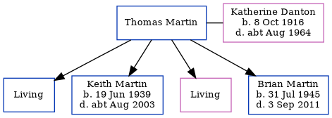

Katherine Martin (née Danton) 1916 - c1964
[ Home ] | [ Calendar ] | [ Surnames Index ] | [ Census Index ] | [ Family History ]The child of Henry Danton (an engine room leading hand) and Clara Winters, Katherine Danton, the second cousin once-removed on the father's side of Nigel Horne, was born in Poplar, London, England on Oct 8, 19161,2, was baptized in Bromley-by-Bow, London, England on Nov 1, 1916 and married Thomas Martin (with whom she had 4 children: Terence John, Keith John L, Brenda C and Brian Philip, along with 2 surviving children) in Poplar around Aug 19354.
During her life, she was living at 10 Lochnagar Street in Poplar on Nov 1, 1916; and at 19 Lochnagar Street in Poplar on Sep 29, 19391.
She died c. Aug 1964 in Stepney, London, England3.
Parents
- Henry Johnson was born on Dec 6, 1882
Children
- Keith John L was born on Jun 19, 1939
- Brian Philip was born on Jul 31, 1945
Citations
- 1939 Register - Findmypast (was recorded at this address)
- England & Wales births 1837-2006 - Findmypast
- England & Wales deaths 1837-2007 - Findmypast
- England & Wales Marriages 1837-2005 - Findmypast
Media
England & Wales marriages 1837-2005 - BMD/M/1935/3/AZ/000368/146
England & Wales births 1837-2006 Transcription - BMD-B-1916-4-AZ-000312-082
1939 Register - TNA-R39-0444-0444H-006-26
England & Wales deaths 1837-2007 - BMD/D/1964/3/AZ/000494/020
Family Tree
Generated by ged2site. Last updated on Jun 11, 2024